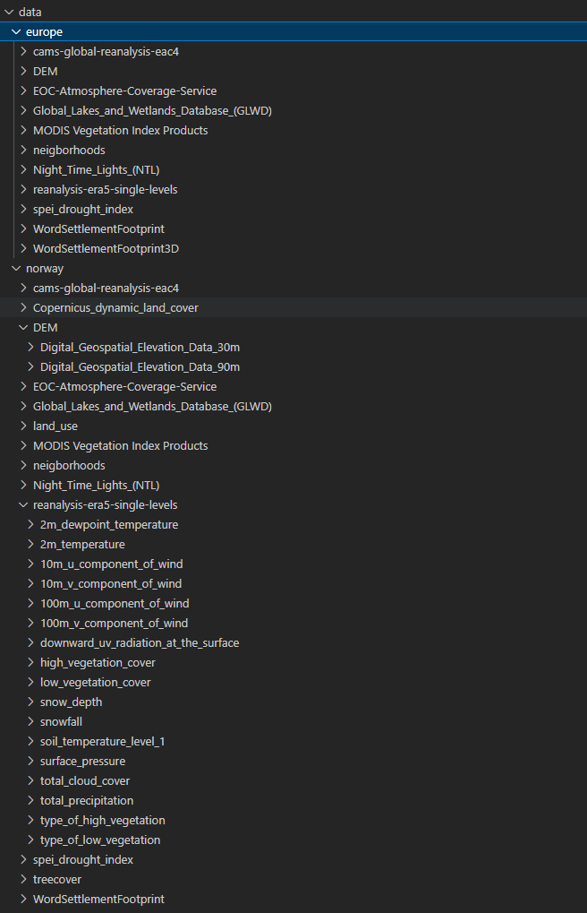

User Guide
This guide walks you through setting up your environment and running the CLUES data processing workflow using Snakemake - a workflow management system that automates the execution of data analysis pipelines.
Prerequisites
Before getting started, ensure the following tools are installed:
- Python 3.8 or higher
pip(Python package manager)- Git
- Snakemake
- (Optional but recommended)
conda— for reproducible environments
Setup Instructions
Clone the Repository
Navigate to your preferred working directory and clone the CLUES repository:
git clone https://gitlab.com/bih_dmbs/CLUES/workflows.git
Set up a virtual python environment:
python -m venv cluesEnv
Activate the virtual environment
Linux/macOS:
source cluesEnv/bin/activate
Windows:
cluesEnv\Scripts\activate
Install dependencies:
Install the required Python packages:
pip install -r requirements.txt
Third party accounts
To enable the CLUES framework to access certain geospatial datasets, users must register with specific data providers and generate personal access tokens.
[!NOTE]
The location of the credential (.sct) files is defined in the general workflow configuration file config.json under the key: configs_assets_folder. For more details on configuration management, see the section Configuration Management.
Copernicus (ECMWF)
Data from the Copernicus Climate Data Store (CDS) and the Atmosphere Data Store (ADS) requires a free account with the European Centre for Medium-Range Weather Forecasts (ECMWF).
Steps
1. Create an ECMWF account at ecmwf.int
2. Visit:
- CDS API instructions at https://cds.climate.copernicus.eu/how-to-api
- ADS API instructions at https://ads.atmosphere.copernicus.eu/how-to-api
- DEM Copericus create user account: https://www.copernicus.eu/en/user/login
- Generate personalized API tokens from both platforms
Token Storage
Save the tokens in two separate files:
cdsapirc_atmo.sct
url: https://ads.atmosphere.copernicus.eu/api key: place your token here
cdsapirc_climate.sct
url: https://cds.climate.copernicus.eu/api key: place your token here
copernicus_credential.sct
grant_type : password username : add your username password : add your password client_id : cdse-public
NASA EarthData
Accessing vegetation indices (e.g., NDVI, EVI) from NASA’s Earthdata platform also requires registration.
Steps
1. Register at earthdata.nasa.gov
2. Create a personal access token
Token Storage
Create the following file:
nasa.sct
token: place your token here
Configuration Management
The CLUES framework is customized through a set of configuration files that define the structure and behavior of the workflow. These include:
- A general workflow configuration file:
workflows/config/config.json - Source-specific configuration files for each data provider:
workflows/config_sources/ - A file for predefined bounding boxes:
workflows/config/bbox.json
General workflow configuration file
The file workflows\config\config.json defines the core parameters for how CLUES operates. It allows full control over what the workflow does, where data is stored, and how different components behave.
Below an example of config.json:
{
"download_folder":"/clues/data",
"tmp_folder":"/clues/tmp",
"configs_assets_folder":"/clues/configs_sources_test",
"config_folder":"/clues/config",
"secrets_folder":"/clues/secrets",
"years": ["2015", "2016", "2017", "2018", "2019", "2020", "2021",
"2022","2023","2024","2025"],
"update_years":["2025"],
"area":"Europe",
"espon_filename_length":80
}
Key Parameters Explained
- download_folder: Path to where all output files will be stored
- tmp_folder: Folder used for temporary intermediate files
- configs_assets_folder: Folder that holds the source-specific configuration files
- secrets_folder: Path where access credentials, e.g., .sct files, are located
- years: List of years for which data should be downloaded
- update_years: Years to be refreshed if the workflow is rerun on an existing database. This is especially of interest for data with high temporal resoultion like climate and antmospheric data
- area: Refers to predefined region from workflows/config/bbox.json (see next section)
- espon_filename_length: Limits the length of filenames for ESPON downloads to prevent exceeding system file length restrictions.
Note: The key "espon_filename_length" is an integer value to limit the filename lengths used while downloading the espon data. The filename is generated from the naming and dimension of the different assets (https://database.espon.eu/api/). As single filename cannot exceed 255 characters, therefore, the limit is necessary.
Bounding boxes
CLUES framework comes with a predefined set of bounding boxes found in workflows\config\bbox.json. Custom bbox must also placed in this file. For example, the bounding box for Europe is represented as "Europe": [72, -15, 30, 42.5]. Here, 72 is the minimum longitude, -15 is the minimum latitude, 30 is the maximum longitude, and 42.5 is the maximum latitude.
example: 'bbox.json'
{
"Europe":[72, -15, 30, 42.5],
"Germany":[55.0581, 5.8663, 47.2701, 15.0419],
"UK":[60.8608, -8.6493, 49.9096, 1.7689],
"Brandenburg":[53.5587, 11.2682, 51.3618, 14.7636],
"Berlin":[52.7136,12.9673,52.2839,13.816],
"Norway":[71.1850, 4.9921, 57.9586, 31.0781],
}
Source-specific configuration files
Each of the primary data sources used by CLUES is utilized and customized on the basis of a distinct configuration file. The base as curated by CLUES is located in the folder workflows\config_sources. The location of the used configs_assets_folder can be customized in the config.json. These files contain metadata on the primary sources. Each of the source-specific configuration file located in the folder workflows\config_sources contains the key "variables" that is linked to a list of assets to be downloaded. To change what assets to download from the different sources simply remove items from the list.
Example of the source-specific configuration file cams-global-reanalysis-eac4.json
{
"type":"atmosphere",
"source":"cams-global-reanalysis-eac4",
"file":"cams-global-reanalysis-eac4.json",
"link": "https://ads.atmosphere.copernicus.eu/cdsapp#!/dataset/
cams-global-reanalysis-eac4?tab=form",
"citation":"Inness et al. (2019),
http://www.atmos-chem-phys.net/19/3515/2019/",
"start_year": "2003",
"end_year": "2025",
"delta_t_in_h":"3",
"format": "netcdf",
"variables":[
{
"name":"black_carbon_aerosol_optical_depth_550nm"
},
{
"name":"dust_aerosol_optical_depth_550nm"
},
{
"name":"organic_matter_aerosol_optical_depth_550nm"
},
{
"name":"sea_salt_aerosol_optical_depth_550nm"
},
...
]
}
Neighbourhood-level processing
CLUES supports neighbourhood-based operations to enhance spatial analysis by incorporating local spatial context. These operations apply filters, such as mean, standard deviation, or terrain-based Zevenbergen–Thorne metrics, within neighbourhood zones, which are circular areas around each pixel defined by a specified radius. The Zevenbergen-Thorne algorithm is utilized on digital elevation models (DEMs) to derive topographic features such as slope (terrain steepness) and aspect (direction the slope faces).
Neighbourhood zones represent the spatial extent used to calculate local statistics around a point. Smaller zones focus on immediate surroundings and fine-scale variation, while larger zones capture broader spatial trends and context.
Whether and how this processing is applied is defined in the source-specific configuration files, which specify the filter type and the radius of the neighbourhood zone. Default configurations are provided, but users can easily adapt them to meet specific analytical needs.
Example of the source-specific configuration file copenicus_dem.json
{
"type":"DEM",
"format": "geotTiff",
"variables":[
{ "name":"Digital_Geospatial_Elevation_Data_30m",
"url":"https://prism-dem-open.copernicus.eu ...",
"resolution":"30",
"neighborhood":{
"mean":[500,1000],
"std":[500,1000],
"zevenbergen_thorne: "yes"}
]
}
Run the workflow
Once everything is set up, third-party accounts are configured, and the configuration files are customized, you can run the CLUES workflow using Snakemake:
snakemake -s workflows/snakefile --cores 16 -p --rerun-incomplete --latency-wait 60
Command Options Explained:
- -s workflows/snakefile specifies the Snakefile path
- --cores 16 uses 16 cores for parallel execution
- -p prints out shell commands being executed
- --rerun-incomplete reruns any jobs that were not completed
- --latency-wait 60 waits up to 60 seconds for output files (useful on shared filesystems)
Anticipated results
The workflow automatically downloads all required geospatial data files into the directory specified in the general configuration file config/config.json. For each file retrieved, a corresponding log file is generated during execution, providing detailed information about the download process. These log files are essential for monitoring progress and diagnosing potential issues.
In cases where the workflow fails — most commonly due to temporary unavailability of external data services — users should consult the relevant log files to identify the source of the problem. Once resolved, the workflow can be safely restarted, and it will resume from where it left off.
Note that certain issues, such as insufficient storage space or network connectivity problems, must be resolved manually. These fall outside the scope of automated recovery and require user intervention before the workflow can continue successfully.
Below is an example of the folder structure of downloaded geospatial data for Europe and Norway

Data enrichment
After running the workflow, the required datasets will be downloaded and stored according to the general configuration specified in config/config.json. You can then enrich your data by linking environmental exposures to participant locations.
Enrichment for Point Locations
In the simplest case, your data may consist of a CSV file with geocoordinates (latitude, longitude) and a participant ID, as shown below:
latitude,longitude,subjectid 51.876259173091015,14.24452287575035,7858 52.09913944097461,13.654840491247233,3406 53.424305699033326,13.453464611332228,8017
To link environmental data to these locations, use the script /scripts/link_locations.py. This script processes all NetCDF and GeoTIFF files in the input folder and extracts values at the specified coordinates.
python link_locations.py locations.csv input_folder output_folder
The results of this enrichment process are saved in the output folder. The output includes:
- JSON files with extracted values from NetCDF features.
- CSV files with extracted values from GeoTIFF features.
Enrichment for Geographic Areas
In addition to point-based enrichment, CLUES supports linking environmental data to geographic areas, such as predefined administrative boundaries (e.g., postal codes or districts). This allows for aggregation of environmental features across regions rather than individual coordinates, enabling analysis when precise locations are unavailable or when regional exposures are more relevant.
Scripts for area-based enrichment will be available soon.
Next Steps: Try It Out
To help you get started, we provide simple applied examples. In addition, scripts are available for enriching a dummy location dataset, and python notebooks demonstrate how to interact with and visualize geospatial outputs using a test dataset. These resources offer hands-on guidance, showcasing how different data types and formats can be processed and analyzed within the CLUES environment.